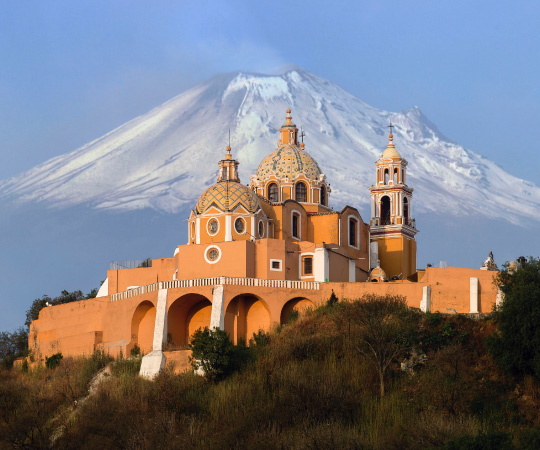

About Me
My name is Carlos. I was born in Puebla, Mexico. I served a mission in the Guadalajara East Mission during the pandemic. I am currently work as bilingual customer service representative. I enjoy to learning new things and to playing sports, I am Flag Football player.
Puebla, Mexico
Puebla de Zaragoza (Spanish pronunciation: [ˈpweβla]; Nahuatl languages: Cuetlaxcoapan; Mezquital Otomi: Nde'ma), formally Heroica Puebla de Zaragoza, formerly Puebla de los Ángeles during colonial times, or known simply as Puebla, is the seat of Puebla Municipality. It is the capital and largest city of the state of Puebla, and the fourth largest city in Mexico, after Mexico City, Monterrey, and Guadalajara. A viceregal era planned city, it is located in the southern part of Central Mexico on the main route between Mexico City and Mexico's main Atlantic port, Veracruz—about 100 km (62 mi) east southeast of Mexico City and about 220 km (140 mi) west of Veracruz.[2]
